Knoa
Nosotros te damos el camino,
tú pones el tema
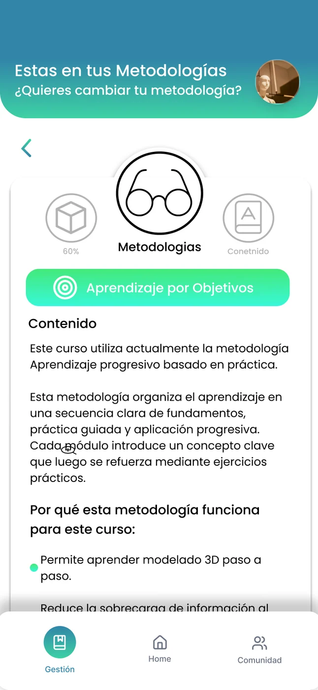
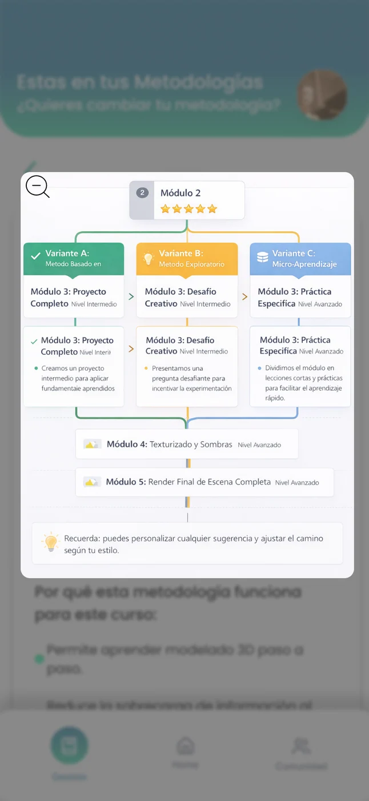
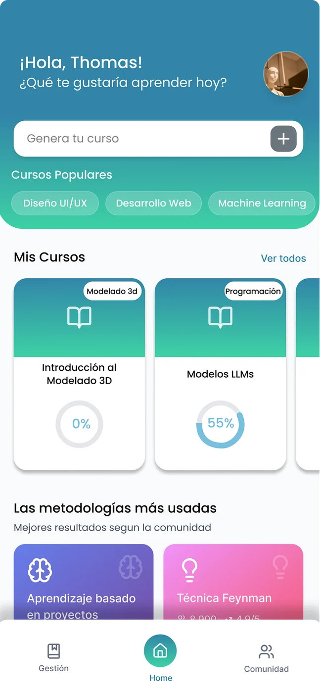
Tipo de proyecto
Proyecto universitario
Trabajo en equipo de clase
Equipo
Equipo de 3 personas
Yo incluido, en investigación, ideación y pruebas
Rol
Diseño e ideación de producto
Investigación, ideación y el Home de la app
Duración
2 meses
[Año por confirmar]
Resumen
Una plataforma que convierte cualquier tema en una ruta de aprendizaje.
Knoa es un ecosistema de aprendizaje impulsado por Inteligencia Artificial para estudiantes autodidactas y profesores. Un modelo de IA entiende lo que el usuario quiere aprender y le arma la ruta, dándole el control sobre la metodología, la evaluación y el seguimiento de su propio progreso.
Investigación
Entrevistas semiestructuradas y cuestionarios para validar a los dos arquetipos y sus frustraciones.
Ideación
Un ecosistema con IA que comprende la intención del usuario y adapta la ruta en tiempo real.
Diseño y validación
El Home, la creación de cursos y pruebas de usabilidad sobre un prototipo interactivo.
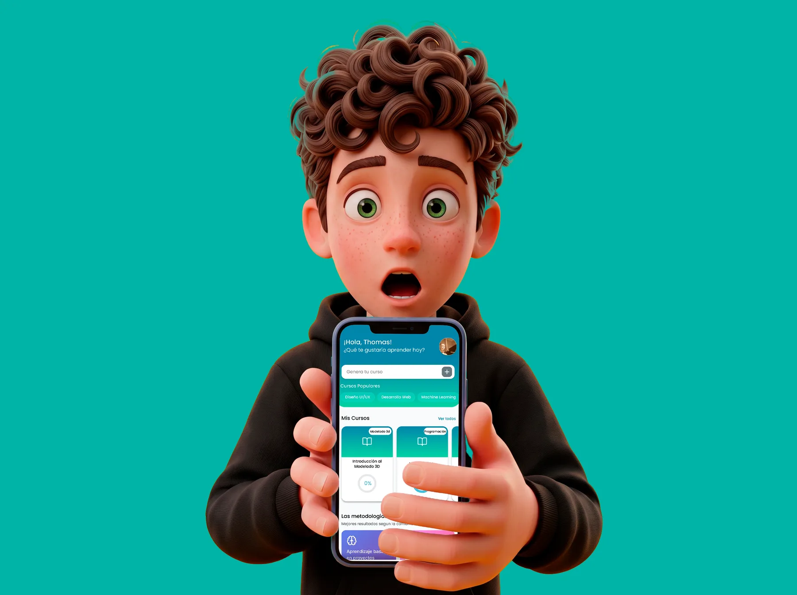
Problema
El problema no es la falta de información: es el exceso sin guía.
Estudiantes y profesores se frustran al intentar estructurar su aprendizaje o sus clases. Carecen de control sobre la metodología, la evaluación y el seguimiento de su progreso, y eso termina muchas veces en abandono o pérdida de interés.
01
Sin control de la metodología
Se compran cursos cuya metodología no coincide con lo que la persona esperaba.
02
Sin progreso visible
El abandono llega temprano cuando no se ve avance ni se sabe qué sigue.
03
Exceso de información
No saber por dónde empezar y encontrar teoría sin aplicación práctica.
Método
Doble diamante: entender bien el problema antes de idear la solución.
El equipo utilizó la metodología del Doble Diamante: primero se explora y define el problema a profundidad y solo después se idea y se prototipa una solución centrada en el usuario.
Descubrir
Entrevistas y cuestionarios.
Definir
Síntesis del problema.
Desarrollar
Ideación del ecosistema con IA.
Entregar
Prototipo y pruebas de usabilidad.
Actores
Quien aprende, la IA que lo guía y los recursos que usa.
El ecosistema se diseñó pensando en dos actores humanos: estudiantes autodidactas y profesores. Ambos necesitan estructurar su aprendizaje o sus clases con una guía clara, y en ese recorrido intervienen tres piezas.

Usuario / Estudiante
Dice qué quiere aprender y cómo prefiere hacerlo.
Agente KNOA (LLM)
Comprende la intención real y genera la ruta personalizada.
Recursos y métodos
Módulos, videos, prácticas y quizzes organizados según la metodología.
Investigación
Antes de diseñar, validamos que los arquetipos y sus frustraciones fueran reales.
El proceso buscó validar si los arquetipos encajaban con la hipótesis y explorar sus dolores, necesidades y frustraciones frente a la educación digital. Se optó por un enfoque cualitativo, con entrevistas semiestructuradas complementadas con cuestionarios cuantitativos, y se grabó el audio de las respuestas para identificar patrones sin limitar la espontaneidad.
8 participantes
Una muestra de U1 a U8, filtrada con un screener antes de entrar al estudio.
Entrevistas semiestructuradas
Con audio grabado, para detectar patrones de comportamiento.
Cuestionarios cuantitativos
Complementan las entrevistas y cruzan las respuestas de cada perfil.
Cómo se eligió a los participantes
El screener evaluó cuatro criterios.
01
Uso de plataformas digitales
Qué tan cómoda es la persona aprendiendo en línea.
02
Abandono previo de cursos
Si ya dejó cursos a medias y por qué.
03
Sensibilidad a la sobrecarga de contenido
Cuánto le pesa el exceso de información.
04
Autonomía y experiencia con IA
Su nivel de independencia y su contacto previo con herramientas de IA.
Perfiles representativos
Estudiante autodidacta
Comunicador social de 30 años.
Profesor universitario
Profesor de 52 años.
Psicóloga educativa
Profesional de 47 años.
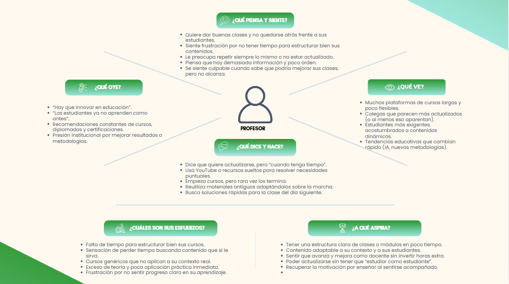
Mapa de empatía del arquetipo Profesor, elaborado en la fase de investigación.
Se muestran los aspectos más importantes: algunas imágenes pueden no coincidir del todo con el texto o no incluir toda la información.
Insights
Estudiantes y profesores llegan con frustraciones distintas. Estos seis hallazgos definieron qué diseñar.
01 · Estudiante
Empezar sin brújula
No saben por dónde empezar y encuentran demasiada teoría sin aplicación práctica.
02 · Estudiante
La metodología equivocada
Compran cursos cuya metodología no coincide con sus expectativas reales.
03 · Estudiante
Aprender para aplicar
Buscan habilidades aplicables, ligadas a la empleabilidad, y valoran entender algo y usarlo enseguida.
04 · Estudiante
Saber qué sigue
Necesitan acompañamiento y que el proceso se ajuste si deciden cambiar de enfoque.
05 · Profesor
Saturados y atrasados
Sienten saturación de información sin guía clara y la sensación de ir atrasados frente a la tecnología.
06 · Profesor
Planear con menos investigación
Buscan eficiencia al planear y un asistente que reduzca el tiempo de investigación previa.
Síntesis del problema
El abandono ocurre temprano cuando no hay progreso visible, hay desorientación por exceso de información y el contenido no se adapta al ritmo de cada persona.
Ideación
Una IA que entiende la intención y arma la ruta.
Con base en los hallazgos, mi enfoque en la ideación fue cómo el usuario estructuraría sus metodologías y cursos de forma intuitiva. La solución fue un ecosistema impulsado por IA con cuatro componentes.
01
Modelo de IA
Capaz de comprender la intención real del usuario.
02
Árbol de decisiones pedagógicas
Respaldado por una base de datos de metodologías.
03
Motor de generación de rutas
Convierte la intención y la metodología en una ruta de aprendizaje.
04
Adaptación pedagógica en tiempo real
Un algoritmo que ajusta la ruta mientras la persona avanza.
Visión a futuro · Fase 3
Integrar el ecosistema con realidad aumentada para crear experiencias de aprendizaje inmersivas.
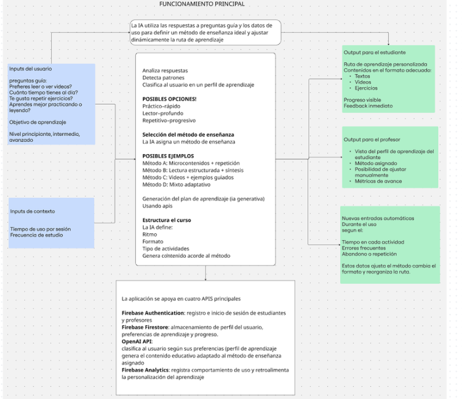
Primeras ideas: qué entra (respuestas y contexto del usuario), cómo la IA elige el método y qué sale para el estudiante y para el profesor.
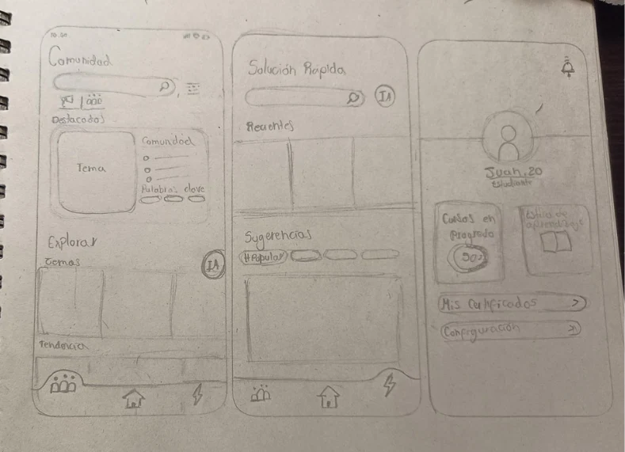
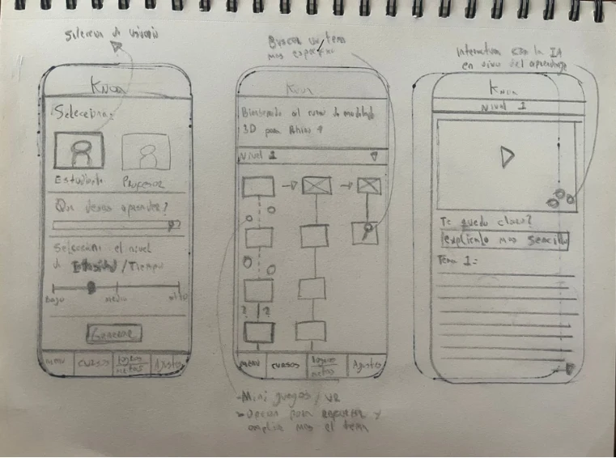
Wireframes hechos a mano de las primeras pantallas.
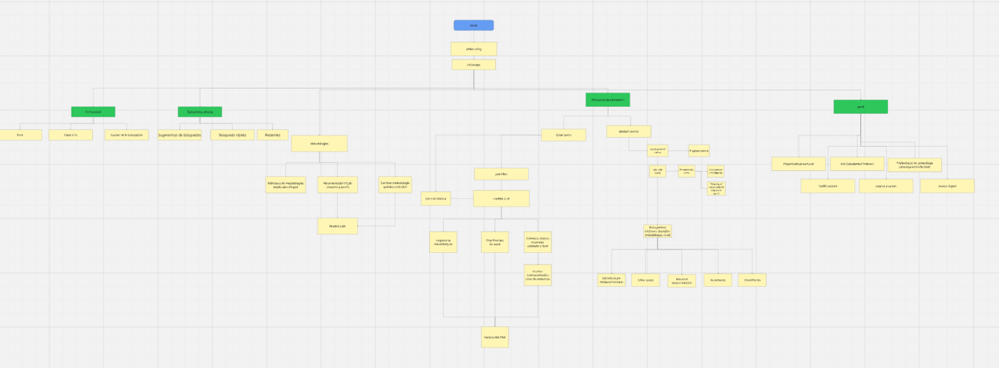
Arquitectura de información de la app.
Se muestran los aspectos más importantes: algunas imágenes pueden no coincidir del todo con el texto o no incluir toda la información.
Diseño
El control del usuario como prioridad.
Mi rol se centró en el Home y en cómo el usuario interactúa con la creación de sus cursos. Diseñamos un flujo donde la sensación de control era lo primero, y descubrimos que dársela generaba mucha confianza y validaba el enfoque adaptativo.
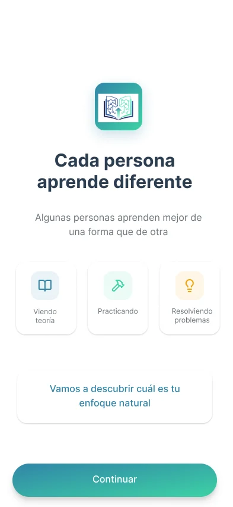
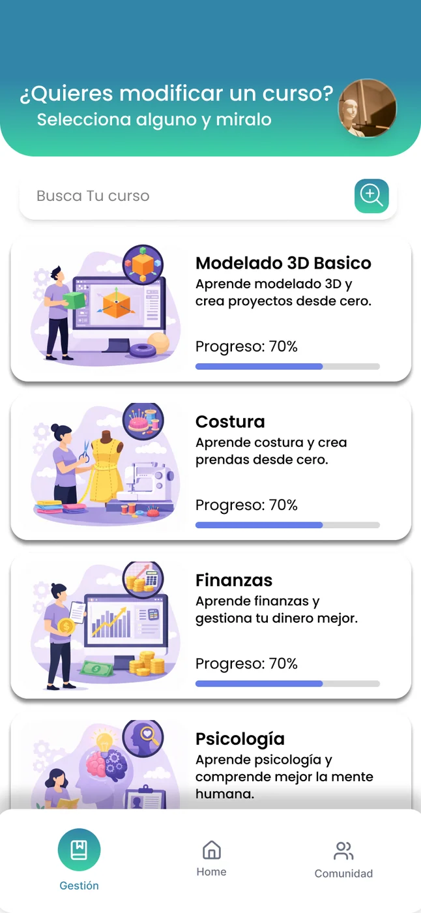
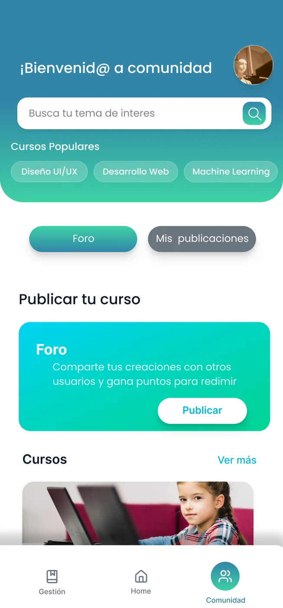
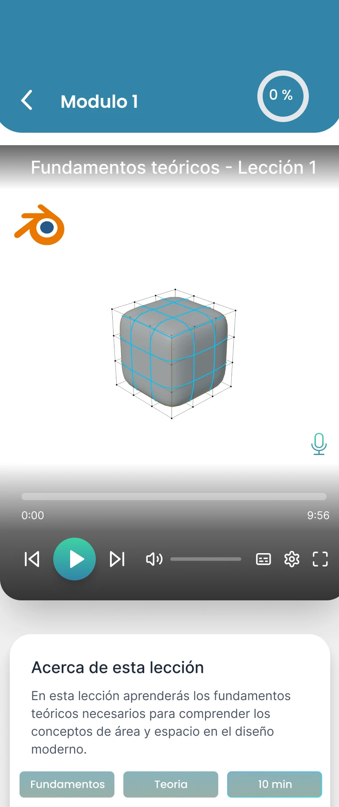
{{a0label}}
Tres espacios, un solo camino
La app arranca con un onboarding que pregunta cómo aprende cada persona y se organiza en tres pestañas: Gestión, Home y Comunidad. Desde el Home se genera el curso, se elige la metodología y se ve la ruta con sus variantes.
Un reto de jerarquía visual
En las pantallas comparativas, los usuarios invertían el orden mentalmente: por su peso visual, asumían que el lado izquierdo era un menú general. Eso obligó a refinar la jerarquía.
Card sorting de las pantallas finales
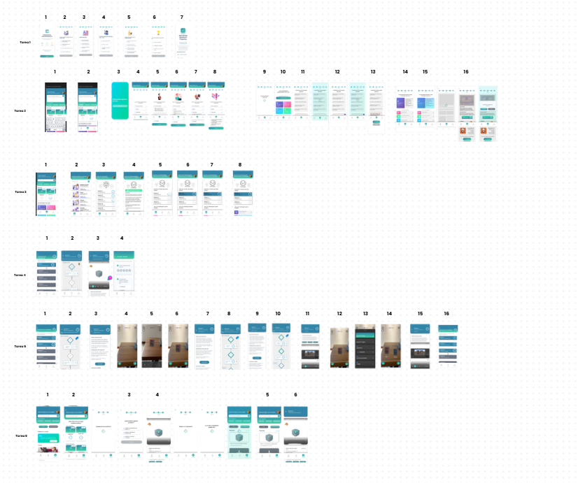
Card sorting de las pantallas finales de Knoa.
Se muestran los aspectos más importantes: algunas imágenes pueden no coincidir del todo con el texto o no incluir toda la información.
Pruebas
Cuando entienden la lógica todo fluye; la fricción está en el primer contacto.
Se preparó una prueba de usabilidad sobre un prototipo interactivo (happy path) con el protocolo de pensamiento en voz alta. El objetivo era evaluar qué tan clara era la arquitectura de información y si el usuario completaba el flujo principal sin fricciones.
Tareas evaluadas
01
Completar el perfilamiento de aprendizaje
02
Generar un curso de modelado 3D
03
Cambiar el método de aprendizaje dentro de un módulo
04
Cursar los módulos iniciales
05
Completar ejercicios prácticos
06
Compartir el avance
Hipótesis de partida
70%
De coincidencia estructural entre lo esperado y lo que hacía el usuario (H1).
< 10 s
Para identificar las interacciones principales (H2).
75%
Completa el flujo principal sin necesitar asistencia (H3).
Resultados con 7 usuarias
6 de 7
Lograron un éxito completo en sus tareas y una alcanzó un éxito parcial. Ninguna abandonó la prueba.
1:05 – 3:15
Minutos de ejecución: desde flujos muy rápidos hasta exploraciones más pausadas.
0 – 6
Clics erróneos por persona; el máximo se concentró en tres usuarias.
Las fricciones se concentraron en la primera pantalla (confusión inicial de inicio) y en la tercera.
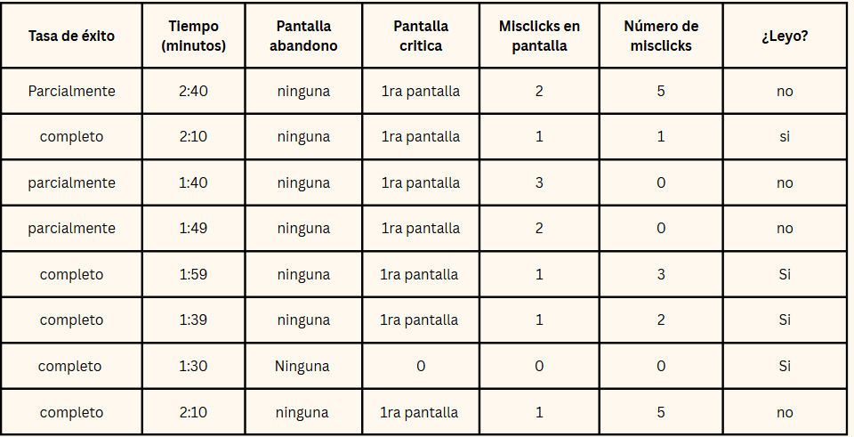
Tabla de ejemplo de una de las muestras, donde se identificaron las pantallas críticas.
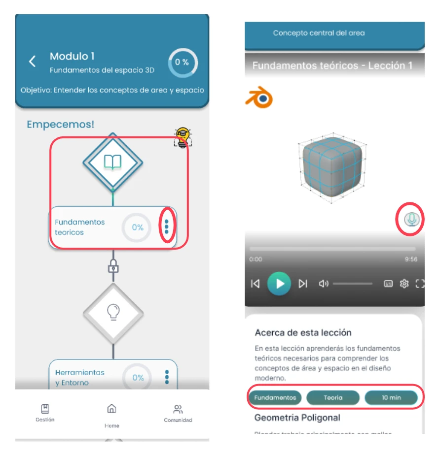
Dónde se vieron los errores
Ejemplo de pantallas de la prueba, con los elementos que se observaron marcados en rojo.
Se muestran los aspectos más importantes: algunas imágenes pueden no coincidir del todo con el texto o no incluir toda la información.
Lo que dijeron
01 · Fortaleza
Flujos intuitivos
Una vez que entendían la lógica y la arquitectura del sistema, completaban las tareas sin dificultad.
02 · Fortaleza
El cambio de metodología se entendía
La animación que indicaba el cambio de metodología fue muy clara.
03 · Fricción
Onboarding y creación, lo mismo
Se percibían como un solo paso: faltaba un punto de activación emocional que dijera «Iniciar curso».
04 · Fricción
La animación de la IA no invitaba a tocar
En la primera pantalla presionaban «continuar» en vez de interactuar con la animación.
05 · Fricción
El swipe no era evidente
El gesto para cambiar el método de aprendizaje no resultaba obvio para todas.
Iteraciones
Cada fricción de la prueba se volvió un ajuste.
Con base en los hallazgos de la prueba se propusieron tres iteraciones clave para el diseño.
01
Interfaz y Home
Menú principal rediseñado para hacer evidentes las opciones de gestión de contenidos. En los botones, la explicación arriba y la llamada a la acción abajo.
02
Microcopy
El enunciado confuso del botón «¿Todo bien?» se cambió por comandos de acción directos y claros.
03
Interacciones
Se exploran indicadores en pantalla para que el swipe que cambia el método de aprendizaje sea obvio desde el primer momento.
Resultados
Un prototipo validado que pone el control en manos de quien aprende.
Knoa concluyó como un sólido prototipo de fidelidad multimedia desarrollado en Figma, respaldado por investigación rigurosa y pruebas de usabilidad. Demostró que darle al usuario el control sobre cómo estructura su metodología, apoyado por IA adaptativa, reduce la fricción y fomenta la confianza en la educación digital.
Figma
Prototipo interactivo de fidelidad multimedia.
2 perfiles
Estudiantes autodidactas y profesores, validados con investigación.
Fase 3
El siguiente horizonte: realidad aumentada para aprender de forma inmersiva.
Pantallas finales
Reflexión
La claridad estructural pesa tanto como el contenido.
Desarrollar la ideación y el Home me permitió entender a fondo la importancia de traducir modelos mentales complejos en arquitecturas de información simples. Lo vimos en las pruebas: cuando el usuario entiende la lógica del sistema, completa las tareas sin dificultad. En los productos educativos, la claridad estructural es tan importante como el contenido mismo.